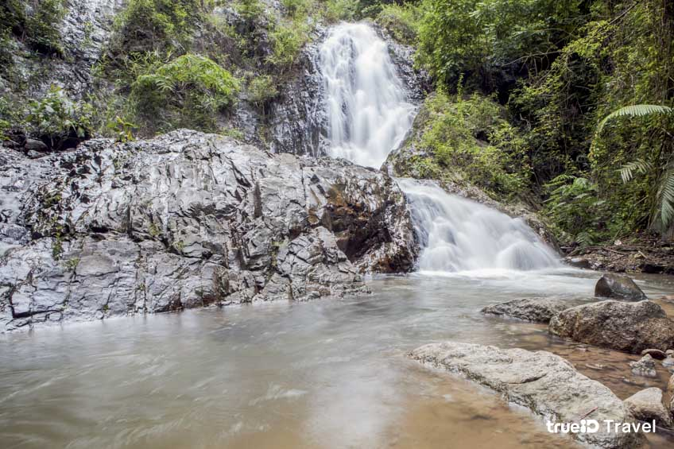
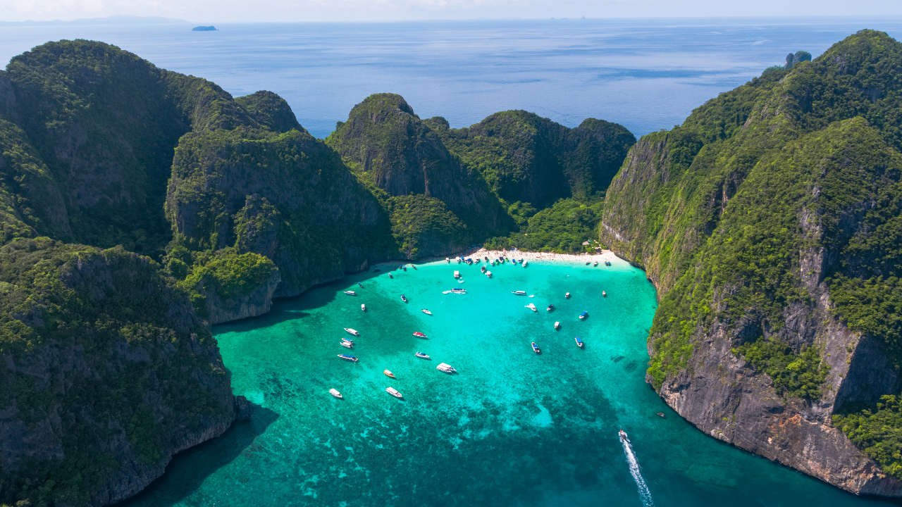

"เกาะพีพี" ตั้งอยู่ในจังหวัดกระบี่ประกอบด้วย 2 เกาะใหญ่คือ เกาะพีพีดอน
และเกาะพีพีเล จุดท่องเที่ยวบนเกาะพีพีเลประกอบด้วยอ่าวมาหยา อ่าวปิเละ และถ้ำไวกิ้ง
ส่วนเกาะพีพีดอนเป็นที่ตั้งของที่พักและสิ่งอำนวยความสะดวกต่างๆ
มีจุดชมวิวเกาะพีพีที่สวยงามสำหรับการเดินทางไปเที่ยวเกาะพีพีสามารถเดินทางแบบวันเดียวกลับมีบริษัททัวร์ให้บริการนำเที่ยวเกาะพีพีมากมาย
"อุทยานแห่งชาติหมู่เกาะลันตา" เป็นหมู่เกาะอันประกอบด้วยเกาะน้อยใหญ่ 25 เกาะในทะเลอันดามันนอกชายฝั่งจังหวัดกระบี่ เป็นอุทยานแห่งชาติทางทะเลที่มีความสวยงาม อุดมไปด้วยทรัพยากรธรรมชาติ ป่าชายหาด ป่าชายเลน แนวปะการังที่สมบูรณ์และหาดทรายรอบเกาะต่างๆ หมู่เกาะแห่งนี้จึงเป็นที่ที่นักท่องเที่ยวนิยมมาเที่ยวเป็นอันดับต้นๆ ของโลก ด้วยความสวยงามของแต่ละเกาะซึ่งมีเอกลักษณ์เฉพาะตัว
"สระมรกต" ตั้งอยู่ใน ตำบลคลองท่อมเหนือ อำเภอคลองท่อม จังหวัดกระบี่ เป็นสระน้ำธรรมชาติที่มีความสวยงามมาก เพราะมีน้ำใสสีเขียวมรกต มีลักษณะเป็นบ่อหินปูนที่สามารถลงเล่นน้ำอยู่ท่ามกลางธรรมชาติได้ มีบรรยากาศของป่าเขาในเขตรักษาพันธุ์สัตว์ป่าเขาประ-บางครามล้อมรอบ น้ำในสระจะสามารถเปลี่ยนสีไปได้ตามวันเวลาและสภาพแสงแดดได้อีกด้วย

"น้ำตกห้วยโต้" ตั้งอยู่ในอุทยานแห่งชาติเขาพนมเบญจา ตำบลทับปริก อำเภอเมืองกระบี่ จังหวัดกระบี่ และอยู่ไม่ไกลจากตัวเมืองกระบี่มากนัก น้ำตกมีด้วยกัน 5 ชั้น นักท่องเที่ยวสามารถชมวิวน้ำตกได้จากแอ่งน้ำตกชั้นที่ 1 ที่จะมองเห็นสายน้ำไหลลงมาตามหน้าผาเป็นชั้นๆ ต่อเนื่องกัน ข้างล่างจะเป็นแอ่งน้ำกว้าง สามารถลงเล่นน้ำได้ ใครที่ชอบการผจญภัยก็สามารถขึ้นไปยังน้ำตกชั้นอื่นๆ ได้
"วัดถ้ำเสือ" ตั้งอยู่ห่างจากตัวเมืองกระบี่ไม่ไกล เป็นวัดอีกแห่งหนึ่งของกระบี่ที่มีความสงบเงียบและตั้งอยู่ท่ามกลางธรรมชาติ มีภูเขาและต้นไม้โอบล้อมร่มรื่น สำหรับชื่อของวัดถ้ำเสือนั้นสันนิษฐานว่าได้มาจากในสมัยอดีตที่ตรงนี้เคยเป็นบริเวณที่มีเสืออาศัยอยู่ โดยภายในถ้ำมีหินที่มีรูปร่างคล้ายๆ กับอุ้งเท้าเสืออยู่ด้วย

"อ่าวมาหยา" นับว่าเป็นสถานที่ท่องเที่ยวที่เป็นไฮไลท์อีกจุดหนึ่งของทะเลกระบี่ที่นักท่องเที่ยวให้ความสนใจมาพักผ่อนทิ้งตัวทิ้งใจลงบนหาดทรายขาวละเอียดที่เค้าว่ากันว่าละมุนเหมือนผงแป้ง นอนแช่น้ำทะเลใสสีเขียวมรกต สัมผัสบรรยากาศและธรรมชาติแวดล้อมซึ่งปกคลุมไปด้วยพันธุ์ไม้ชายทะเล จึงไม่แปลกใจเลยที่ต่างชาติจะยกให้เป็นทะเลไทยที่สวยติดอันดับโลก